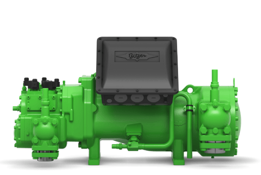
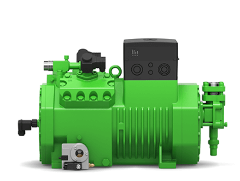
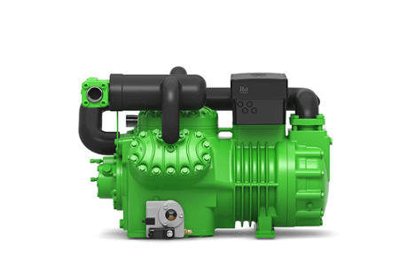
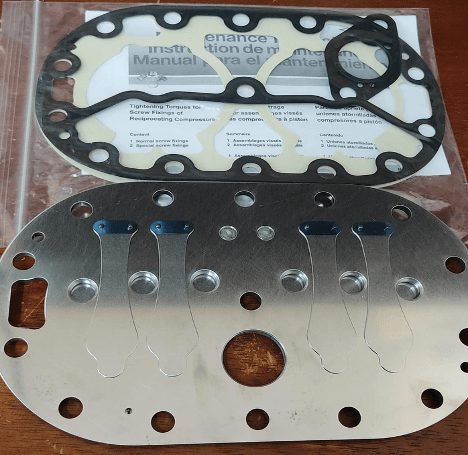

Por más de 75 años Bitzer ha representado el liderazgo tecnológico en compresores de refrigeración a nivel mundial. En Ecuclima somos distribuidor autorizado Bitzer en Ecuador, con stock permanente de repuestos originales y técnicos especializados en la reparación de compresores de tornillo y semiherméticos — una capacidad que muy pocos talleres en el país pueden ofrecer. Desde plantas procesadoras de alimentos hasta centros de distribución frigorífico, un compresor Bitzer bien seleccionado y mantenido es la diferencia entre una operación continua y una parada de planta.
Serie HS.53 a HS.85 — tornillo semihermético
Los compresores de tornillo semihermético Bitzer de la serie HS representan la opción estándar para refrigeración comercial e industrial de gran escala en Ecuador. Con motor incorporado y diseño de accionamiento directo, entregan alta capacidad con operación continua y eficiencia energética superior a los sistemas de pistón en cargas superiores a 50 HP. La construcción semihermética permite el acceso al interior para mantenimiento mayor sin reemplazar el compresor completo, reduciendo el costo de ciclo de vida en un 30-40 % frente a compresores herméticos de capacidad equivalente.
- Rango de capacidad: desde 100 kW hasta más de 1.000 kW de potencia frigorífica, según refrigerante y condiciones de evaporación.
- Refrigerantes: R404A, R507, R134a, R22 y R717 (amoníaco) en versiones específicas.
- Aplicaciones: plantas procesadoras de alimentos, cámaras de congelación industrial, centros logísticos frigoríficos, procesos químicos y farmacéuticos.

Serie Ecoline — pistón semihermético
La serie Ecoline reúne los compresores de pistón semiherméticos más avanzados de Bitzer, diseñados para cumplir con las exigencias actuales de eficiencia energética y compatibilidad con refrigerantes de bajo impacto ambiental. Manejamos modelos como el 6HE-35Y y el 6GE-40Y, equipos de 6 cilindros con capacidad intermedia que equilibran rendimiento, confiabilidad y costo de inversión.
- Cabezales de cilindro optimizados para mejor flujo de refrigerante.
- Sistema de descarga de cuatro etapas que reduce la carga del motor en arranque.
- Construcción modular que permite configuraciones de dos etapas para baja temperatura, con inyección de refrigerante intermedia.

Semiherméticos de dos etapas
Cuando la aplicación exige temperaturas de evaporación por debajo de -25 °C, un compresor de una sola etapa alcanza límites de relación de presión que comprometen la eficiencia y la vida útil. Los compresores semiherméticos de dos etapas Bitzer resuelven esta limitación dividiendo la compresión en dos etapas con enfriamiento intermedio, permitiendo alcanzar temperaturas de evaporación de hasta -50 °C con rendimiento aceptable y confiabilidad mecánica.
- Aplicaciones: túneles de congelación rápida, cámaras de ultracongelación, procesos de liofilización, laboratorios farmacéuticos y producción de hielo en escamas.
- Ventaja clave: menor desgaste del mecanismo por relación de presión reducida en cada etapa, con intervalos de mantenimiento más amplios.

Repuestos y reparación en taller propio
Un compresor industrial no es un consumible: es una inversión que debe rendir de 15 a 20 años. Mantenemos stock de repuestos originales Bitzer que acortan los tiempos de parada: placas de válvula, bujes, service kits completos, resistencias de cárter, sellos de eje y juegos de rodamientos. Pero más allá del repuesto, contamos con taller propio en Quito equipado para reparar compresores de tornillo y semiherméticos — una capacidad que nos diferencia de quienes solo venden partes.
- Desarme completo e inspección dimensional de rotores y carcasas.
- Rectificado de asientos de válvula, reemplazo de rodamientos y sellos.
- Balanceo dinámico del conjunto rotatorio y prueba de hermeticidad con helio.
- Puesta en marcha con monitoreo de vibraciones y temperatura, garantía de reparación y certificado de prueba.

¿Por qué elegir Bitzer con Ecuclima?
- Distribuidor autorizado con acceso directo a fábrica y catálogo completo
- Técnicos certificados en diagnóstico y reparación de compresores de tornillo
- Stock de repuestos originales en Quito, envío nacional en menos de 24 horas
- Selección técnica según carga real, refrigerante y condiciones de altura
- Taller propio: no dependemos de terceros para reparaciones urgentes
¿Necesita seleccionar un compresor para su planta o reparar uno existente? Cuéntenos su aplicación, refrigerante y capacidad requerida. Respondemos con cotización técnica en menos de 24 horas.
Preguntas frecuentes
¿Qué diferencia hay entre un compresor de tornillo y uno de pistón semihermético?
El de tornillo (serie HS) está pensado para cargas grandes y continuas, por encima de 50 HP, con mejor eficiencia energética a esa escala. El de pistón (serie Ecoline) es la opción para capacidades intermedias, con menor costo de inversión y buen rendimiento en operación variable.
¿Cuándo se necesita un compresor de dos etapas?
Cuando la temperatura de evaporación baja de -25°C. Un compresor de una sola etapa alcanza allí una relación de presión que compromete eficiencia y vida útil; el de dos etapas divide la compresión con enfriamiento intermedio y permite llegar hasta -50°C con confiabilidad mecánica.
¿Ecuclima repara compresores Bitzer o solo vende repuestos?
Tenemos taller propio en Quito equipado para reparar compresores de tornillo y semiherméticos: desarme, inspección dimensional, rectificado de asientos de válvula, balanceo dinámico y prueba de hermeticidad con helio, con garantía de reparación.
¿Qué refrigerantes manejan los compresores Bitzer que distribuyen?
La serie HS trabaja con R404A, R507, R134a, R22 y versiones específicas para R717 (amoníaco). La serie Ecoline es compatible con refrigerantes de nueva generación de menor impacto ambiental.